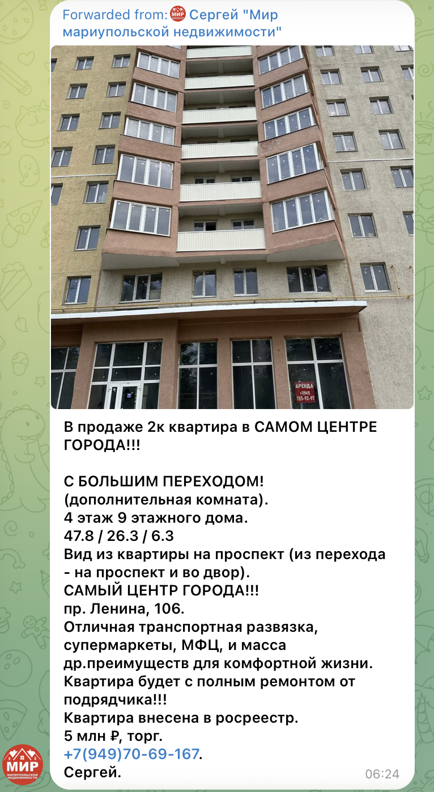
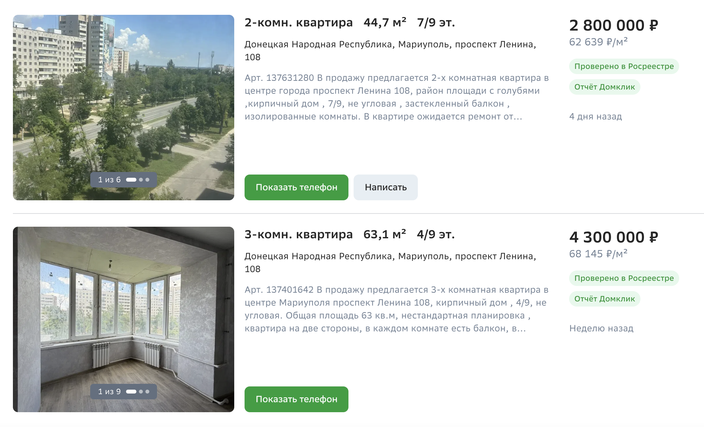
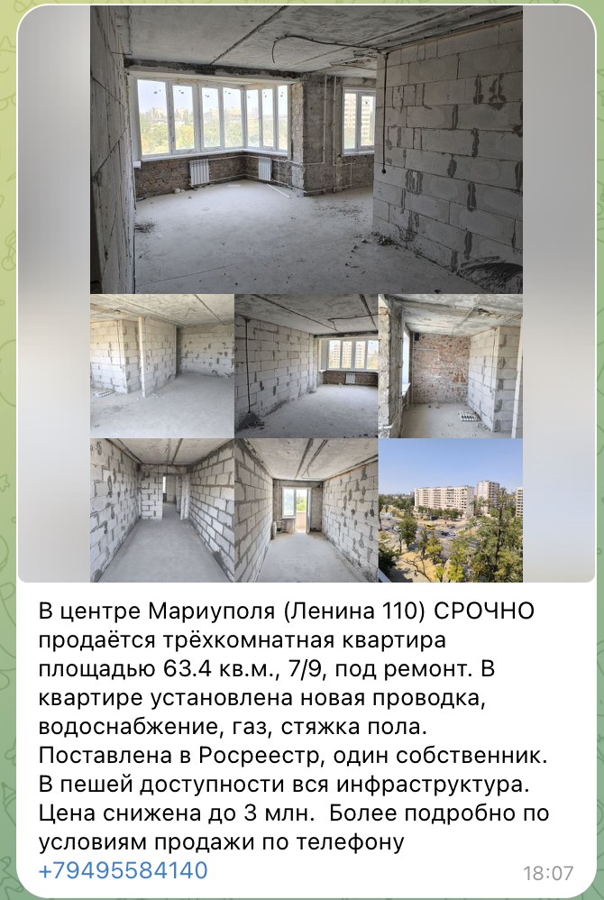

00 · Четыре дома, одно распоряжение · оккупированный Мариуполь
Восстановление без реституции проспект ЛенинаДо вторжения (укр.)просп. МируОккупационный (рус.)просп. Ленина 104 · 106 · 108 · 110 · Жовтневый районУкраинскийЖовтневий районРусскийЖовтневый район
Четыре соседних повреждённых войной дома, все четыре поимённо — в одном распоряжении о сносе, и совершенно разные физические судьбы: 106 восстановлен на месте — в лесах, заново оштукатурен, а прежних жильцов на объект физически не пускают; 108 снесён лишь частично (снесён один подъезд-секция, остальная башня стоит); по 104 и 110 снос вообще не подтверждён — но сотни квартир во всех четырёх одинаково, поштучно сняты с собственников через реестр «бесхозяйного», какой бы из этих очень разных физических исходов ни был правдой.
Нормативные акты этого дела — клик открывает карточку в конвейере изъятия
[C]Распоряжение «ГКО ДНР» № 56 о сносе (29.09.2022) [A]Включение в реестр «бесхозяйного» [A]Распоряжение № 619 (12.10.2023) — требование правоустанавливающих документов [B]ФКЗ № 4 — судебная стадия упразднена [G]Закон «ДНР» № 141-РЗ — распределение компенсационного жилья [H]Переименование улицы — Мира → Ленина


01 · Четыре объекта
Все четыре названы поимённо в одном распоряжении о сносе
Все четыре дома перечислены по отдельности в распоряжении «ГКО ДНР» № 56 о сносе от 29.09.2022Распоряжение «ГКО ДНР» № 56 от 29.09.2022 и все вместе — в коллективном письме жильцов (§04). Все четыре стоят в одном районе.
| Адрес | Категория RD4U | Квартир снято через реестр | Подтверждённая физическая судьба |
|---|---|---|---|
| проспект Ленина, 104До вторжения (укр.)просп. Миру, 104Оккупационный (рус.)просп. Ленина, 104 | A3.1, A3.6 | 71 | Повреждения штурма подтверждены (2022, видео); снос НЕ подтверждён |
| проспект Ленина, 106До вторжения (укр.)просп. Миру, 106Оккупационный (рус.)просп. Ленина, 106 | A3.1, A3.6 | 72 | Повреждения подтверждены; восстановлен на месте, не снесён |
| проспект Ленина, 108До вторжения (укр.)просп. Миру, 108Оккупационный (рус.)просп. Ленина, 108 | A3.1, A3.6 | 76 | Снесён частично (один подъезд-секция, видео) — НЕ снесён целиком |
| проспект Ленина, 110До вторжения (укр.)просп. Миру, 110Оккупационный (рус.)просп. Ленина, 110 | A3.1, A3.6 | 64 | Визуальных свидетельств пока нет |
02 · Противоречие в сердцевине дела
Снесён на бумаге · восстановлен в натуре · стёрт поквартирно — в любом случае
Дорожка 1 — на бумаге снесён
Распоряжение «ГКО ДНР» № 56 о сносеРаспоряжение «ГКО ДНР» № 56 от 29.09.2022 перечисляет дом 106 по полному адресу, под снос, с датой 29 сентября 2022 года. Источник — собственный открытый реестр сносов минстроя «ДНР», официальный срез от 16 марта 2026 года.
 104 · двор · крупный план
104 · двор · крупный план 104 · двор · широкий план
104 · двор · широкий план ▶104 · фасад целиком · май 2022
▶104 · фасад целиком · май 2022 ▶106 · бывший супермаркет АТБ
▶106 · бывший супермаркет АТБ ▶106 · выгоревшие балконы · май 2022
▶106 · выгоревшие балконы · май 2022 ▶весь отрезок · снег · февраль 2023
▶весь отрезок · снег · февраль 2023Связующая ступень [H] — топонимика как деукраинизация
Сам адрес — оккупационное переименование. Довоенный украинский адрес этой группы домов — проспект Мирупросп. Миру («проспект Мира»); собственные уличные указатели оккупационной администрации и заголовок этого дела до сих пор несут его в скобках — «(Мира)», потому что переименование настолько свежее, что ни жители, ни даже оккупационные бумаги к нему до конца не привыкли. Переименован в проспект Ленинапросп. Ленина — тем же топонимическим слоем, что уже задокументирован для дома проспект Мира, 100 → проспект Ленина, 100 (ступень [H]). Как отмечено в карте системы, самого мариупольского распоряжения о переименовании нет ни в одном публичном реестре; переименование задокументировано по независимым сообщениям.
Это не техническое делопроизводство: отрезать адрес от его довоенного украинского имени — часть того же стирания, которое это дело документирует на уровне собственности. Связь дома с его украинским прошлым режут на карте в тот же момент, когда его квартиры в реестре режут от их собственников. См. [H]ступень «Топонимика / отмывание адреса».
Дорожка 2 — в натуре восстановлен, не снесён
Телеграм-чат жильцов самого дома (@Lenina106_Mariupol) показывает восстановительные работы через тринадцать месяцев после распоряжения о сносе — не расчищенный участок и не котлован новостройки:
«Строители говорят закончат тепловой контур к концу года. Уже в некоторых квартирах ведутся штукатурные работы. В сам дом никого не впускают.» Чат жильцов, с фотографией · 05.10.2023
«Почему вам не вернут вашу квартиру? Если вы собственник и есть документы… дом то не сносили…» Чат жильцов · 05.10.2023

Дорожка 3 — снова на бумаге: стёрт поквартирно в любом случае
Независимо от того, какая из дорожек 1/2 физически истинна, реестр «бесхозяйного» провёл квартиры 106-го как «бесхозяйные» по четырём датированным срезам — всё это время, пока жильцы были заведомо живы, организованы и добивались возвращения своих квартир:
Затронутые квартиры (по номерам): 3,4,5,6,7,9,10,11,12,13,14,15,16,19,20,21, 24,25,26,27,28,29,30,31,32,34,42,44,47,48,49,51,52,54,56,58,60,62,63,64,65,66,67,68,71,72, 73,76,78,79,80,82,83,84,85,88,89,92,93,94,95,96,97,99,100,101,102,103,105,110,111,113,114, 116,121,124,125,126,128,129,132,133,137,138,140,143,145,148,149,150,153,157.
Три разных дома, три разных физических исхода (восстановлен / частично снесён / не подтверждено) — но через реестр все проведены одинаково. Это опорный пример второй модальности изъятия в этом проекте: административное стирание, которое обгоняет физическую реальность и игнорирует её — даже когда сама эта реальность разнится от дома к дому внутри одного распоряжения.
03 · Дорожка 4 — человеческая цена
Не менее семи задокументированных смертей в четырёх домах
Независимо от всех бумажных дорожек выше: жители этих домов погибали во время штурма и в месяцы после него — пока юридическая судьба самих домов оспаривалась на бумаге. Поимённый список из шести погибших — под заголовком «Погибшие 6ч. Мира, 110», с атрибуцией mariupoldestruction.com — был получен 19.06.2026 и сверен с мемориальными постами о названных в нём людях; седьмая, неопознанная смерть задокументирована отдельно: самодельной могилой, выкопанной прямо во дворе 106-го.
- Глушко Анатолий Петрович 01.07.1937 – 17.03.2022 Умер в подвале от осколочного ранения головы; тело перенесли в квартиру, но похоронить из-за обстрелов не смогли. Источник: t.me/mariupolRIP/36979
- Хильдунин Евгений Александрович род. 17.05.1985 Погиб в доме; тело перенесли в обувной магазин, службы забрали его перед Пасхой. Источник: t.me/mariupolRIP/37382
- Малюха Анатолий (написание фамилии не подтверждено) род. 1943 · инвалид «Сгорел заживо» — со слов соседки; независимой ссылки, кроме пересказанной реплики, нет.
- Сестра Коваленко Инги Евг. имя не названо · 24.03.2022 Убита снайпером у третьего подъезда; тело пролежало на месте три дня. Её документы и телефон позже были проданы и использованы (16.04.2022) для мошеннического получения гуманитарной помощи на её имя.
- Афонин Пётр · Афонина Клавдия жители дома по проспекту Ленина, 110, кв. 127 Названы в том же поимённом списке погибших по этой группе домов.
- Неопознанный — самодельная могила во дворе дом 106 · дата захоронения не записана Седьмая смерть, отдельная от шести названных выше: самодельная могила, выкопанная во дворе самого 106-го во время штурма, никогда не оформленная и не опознанная. Считается отдельно: этого человека нет среди шести имён списка, и место (106) не совпадает с домом, где жило большинство из шести названных (110).
Заголовок документа и пятеро из шести названных указывают на дом 110; могила — у 106-го. Список шести мы учитываем как общую находку по всем четырём домам, не приколотую к одному; могила записана именно за 106-м. Это погибшие мирные жители из публичного мемориального массива: назвать их — и есть документальная задача, на них не распространяются правила проекта о защите живущих собственников.
04 · Коллективная запись самих жильцов
Письмо Путину, свидетельства на камеру и огороженная, но замершая стройка
Коллективная петиция, сохранённая дословно из чата жильцов (датирована 18.10.2023), подписана «Жители домов 104, 106, 108 и 110 по проспекту Ленина, г. Мариуполь» и адресована:
президенту России Владимиру Путину · министру строительства России Иреку Файзуллину · «министру строительства ДНР» Николаю Цыганову · «прокурору города Мариуполя» Андрею Полищуку · «мэру Мариуполя» Олегу Моргуну
Полищук — не завезённый российский чиновник: довоенный украинский районный прокурор, с 2014 года в розыске в Украине за сепаратизм, бежал в «ДНР», объявил себя «главным прокурором» оккупированной Горловки, позже посажен оккупационным прокурором Мариуполя. Коллаборант, а не варяг (zradomir.com.ua; отчество ни в одном источнике пока не подтверждено).
Ответственную строительную цепочку письмо называет прямо:
Застройщик: Минстрой России · Заказчик: ППК «Единый заказчик в сфере строительства» · Генподрядчик: ООО «РКС-НР» Из коллективного письма — та же федеральная подрядная цепочка, что уже собрана в графе связей проекта; клик по любому имени открывает его

На камеру, год спустя — та же жалоба
Жители повторяют то же самое уже в объектив: работы остановлены без объяснений; новые субподрядчики появляются раз за разом и ничего не делают; коммерческие площади первого этажа уже сданы — банк, цветочный, пельменная, — а жильцы всё ещё не могут попасть в собственные квартиры; и — утверждение, которого в письменной петиции нет — в ходе работ поменялись метраж и планировка квартир («квадратура изменилась»).


05 · Бумажный след, продолжение
Решение № I/3-3 — список компенсационного жилья для чужих очередников
Второй документ — решение № I/3-3 от 13.02.2026Решение № I/3-3 от 13.02.2026 (сохранено из официального мариупольского информационного канала) — долго оставался сканом без распознанного текстового слоя. Теперь он прочитан — по развороту первой страницы и полному распознаванию всех 23 страниц: это решение Мариупольского городского советаМариупольский городской совет ДНР о включении конкретных квартир, уже записанных как муниципальные, в перечень жилья, которое можно выдавать как компенсацию другим, чужим очередникам — не возвращать собственникам этих квартир — со ссылкой на закон «ДНР» № 141-РЗ от 18.12.2024Закон ДНР от 18.12.2024 № 141-РЗ.

Неподтверждённая зацепка по распознанному тексту — не установленная цифра
Распознавание всего приложения дало примерно 10 квартир по адресу 104, 8 — по 106 и 8 — по 108 (кадастровые номера восстановлены построчно); по 110 чистого совпадения нет. Это подсчёт по сырому распознаванию плотной многоколоночной таблицы, построчно вручную НЕ выверенный. Считать сильной зацепкой, не установленной цифрой. Следующий шаг — структурированная построчная перевыгрузка, прежде чем цифру можно будет цитировать как доказательство.
Если подтвердится — это недостающая конечная точка перераспределения для 104/106/108: квартиры, с которых жильцов этих самых домов сняли через реестр, перенаправляются в компенсационный фонд для другого контингента очередников — документом, датированным всего за четыре месяца до этой находки. Это прямо поддержало бы квалификацию по ст. 8(2)(b)(viii) Римского статута (перемещение населения) — конкретным датированным актом, а не выведенной закономерностью.
06 · Перераспределение: сторона спроса
Те же отобранные квартиры — в объявлениях о продаже
Свидетельства перепродажи уже есть по 106, 108 и 110 — каждое сохранено скриншотом. По 104 продажи пока не выявлено.

проспект Ленина, 106
t.me/Mariupol_house/84850 · размещено 24.01.2024
5 млн ₽ торг
2 комнаты с «переходом» · 47,8 / 26,3 / 6,3 м² · этаж 4/9 · полный ремонт от подрядчика · внесена в Росреестр
Первое свидетельство перепродажи по 106-му

проспект Ленина, 108
Домклик · сохранено 30.06.2026 · не менее 2 активных объявлений
2 800 000 ₽ · 4 300 000 ₽
2 комн., 44,7 м², 7/9 · 3 комн., 63,1 м², 4/9 · на обеих — «Проверено в Росреестре» и «Отчёт Домклик»
Несколько одновременных объявлений; росреестровский значок на обоих

проспект Ленина, 110
t.me/Mariupol_house/676643 · размещено 29.12.2025
3 млн ₽ цена снижена
3 комнаты · 63,4 м² · этаж 7/9 · под ремонт · новые проводка/вода/газ/стяжка · «Поставлена в Росреестр, один собственник»
Атрибуция выверена по первоисточнику — дом 110
07 · Конечные точки ответственности
Каждое требование опирается на собственные записи оккупационной администрации
Реестр ущерба RD4U (Совет Европы) · Реституция
Жильцы не могут даже войти — не то что восстановить право, — какая бы из бумажных дорожек ни была «правдой».
Римский статут · Уголовная ответственность
Гибель людей — независимо от любой из бумажных дорожек: шестеро жителей этой группы домов задокументированы как погибшие во время штурма и после него (§03), пока юридический статус домов растаскивали по несовместимым дорожкам сноса / восстановления / реестра. На имущественно-правовой анализ это не влияет — это его человеческая цена.
08 · Провенанс · цепочка хранения
Воспроизводимо от первоисточника до базы
Каждое утверждение этого дела взято напрямую из оригинального документа, видео или реестровой записи. Каждый артефакт захэширован и снабжён меткой времени в момент захвата, так что его подлинность можно независимо проверить позже. Таблица ниже — полный каталог цепочки хранения: первоисточник, дата захвата и криптографический хэш каждого использованного выше артефакта, для читателей с профессиональным или юридическим интересом к проверке доказательств. Учётный код MUP-CS-002 — постоянный идентификатор дела в каталоге проекта, docs/case_studies/REGISTRY.md.
Полный каталог цепочки хранения — 22 артефакта
| Утверждение | Артефакт-источник | SHA-256 | Сохранено |
|---|---|---|---|
| Распоряжение о сносе №56 | minstroy reestr-snosa_16_03_2026.csv | d431a530…42ea37 | 09.06.2026 |
| 72 квартиры внесены в реестр «бесхозяйного» | Zhovtnevyi_r_n.xlsx (gosweb.gosuslugi.ru) | add72b41…85cfeae | ранее |
| Жильцов не пускают, восстановление идёт | фото из чата @Lenina106_Mariupol, сообщения 35/77 | 61be44fe…, 3aa8d569… | октябрь 2023 |
| «дом то не сносили» (опровергает снос) | тот же чат, сообщение 37 (перепроверено) | b20d2bf2… | 05.10.2023 |
| Коллективное письмо Путину / в министерства / прокурору / мэру | Письмо в инстанции.pdf (+ миниатюра 1-й стр.) | fe670bca…77f8f36 | 18.10.2023 |
| 125 поквартирных исчезновений, сопоставленных со сносом | срезы реестра «бесхозяйного» 2024-09 → 2025-11 | построчный jsonl | июнь 2026 |
| ФКРМО бросил ремонт 106-го (жалоба прокурору) | @Lenina106_Mariupol, сообщение 986 | 74b97bb3…8997bde05 | 02.06.2025 |
| Наклейка на дверях с распоряжением №619 (требование документов) | @Lenina106_Mariupol, сообщение 269 | 1ca8ed3d…361627e05 | 27.03.2024 |
| Повреждения 104-го (витрины первого этажа) | YouTube «2022.03.04 пр. Миру 104» (Near You) | 3215e47c…604d8f5 | 04.03.2022 |
| Повреждения 104-го (фасад целиком) | YouTube shorts/5fuqt-M5S6I | b1313dae…69fc9822 | май 2022 |
| Повреждения двора 104-го (второй источник, 3 кадра) | YouTube fzN0pI8alEY | 867ab498…398749ae7 | 19.06.2026 |
| Повреждения 106-го (бывший супермаркет АТБ) | YouTube @MARIUPOLNOW | b32d1544…109506a2c | 25.06.2022 |
| Повреждения 106-го (выгоревшие балконы) | YouTube «Пр-т Мира 106 Май 22г» | c7ffa6b0…1ba8d18c | май 2022 |
| Вид двора 106-го (повреждения легче — согласуется с восстановлением) | YouTube fzN0pI8alEY | 867ab498…398749ae7 | 19.06.2026 |
| 108-й снесён частично (один подъезд, остальное стоит) | YouTube shorts/Bzq5QnarNAo «снос дома» | ea535398…2bb3ccab | без даты |
| 108-й, дальний план восстановления | YouTube Korzhov Vlog (один кадр) | 4cb9fe0f…f961173 | 23.08.2023 |
| Довоенный вид 110-го, 1979 | Pastvu p/1167758 (~25 м от объекта) | 10d33e28…313dc821 | 1979 |
| Свидетельство жильцов на камеру (все 4) | YouTube CHrEXXI8CK0 | a8e0e253…1ecf4934 | 19.06.2026 |
| Обход огороженной замершей стройки | YouTube pmb7BIl-Atw (фрагмент 1:09–6:42) | 8867e667…e5e9b117 | 19.06.2026 |
| Перепродажа, 106 (2 комн. с «переходом», 5 млн ₽) | t.me/Mariupol_house/84850 (метаданные виджета) | 2537366d…8bef8c45c | 24.01.2024 |
| Перепродажа, 108 (61,3 м², 4,5 млн ₽) | dnr.red, сохранено вручную (антибот) | 53a2850b…550f628b | 08.06.2026 |
| Перепродажа, 110 (3 комн., 63,4 м², 3 млн ₽) — атрибуция выверена | t.me/Mariupol_house/676643 (метаданные виджета) | 5a9171bd…b700aaa0 | 29.12.2025 |
| Поимённый список погибших, 6 человек (общий) | mariupolRIP/36979, /37382 + карта «Погибшие» | 5c018486…, 40fec819…, c1f20d23… | 19.06.2026 |
| Решение №I/3-3 — перечень компенсационного жилья (зацепка, НЕ ВЫВЕРЕНО) | Reshenie_I_3_3_ot_13.02.2026.pdf (+ миниатюра) | 02048976…6889e215bd | 14.02.2026 |
Оккупационные регистрации, решения и распоряжения о сносе — доказательства акта изъятия, а НЕ действительный титул. Украина их не признаёт, и мы тоже. Живущие законные собственники обезличены; названные здесь погибшие мирные жители — из публичного мемориального массива, и назвать их — документальная задача. Невыверенный подсчёт по распознанному тексту в §05 помечен как зацепка, а не установленная цифра.
Поддержать проект
Этот проект ведёт автор в одиночку — без финансирования и грантов, на собственные средства и время. Если вы считаете эту работу нужной, вы можете помочь мне покрыть часть расходов.